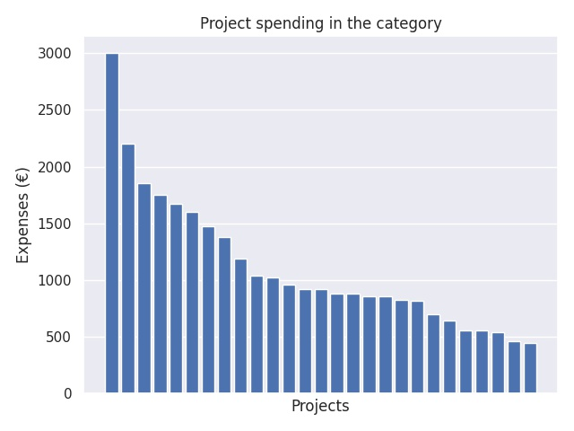

Valmistelevat vierailut ERASMUS + yleissivistävälle koulutukselle 2019
Category summary
1.11K spent on average
3K highest spending

Reports in the category
Seinäjoen kaupunki
Project name: San Donà di Piave
3K spent
Kemin kaupunki
Project name: Freies Gymnasium Penig
2.2K spent
Karleby stad
Project name: IES Gabriel Garcia Marquez
1.86K spent
Porin lyseon lukio
Project name: Liceo Majorana-Laterza
1.75K spent
Vaskivuoren lukio
Project name: Gimnazija Francet Preserna
1.67K spent
Kaarinan kaupunki
Project name: Prywatna Szkola Podstawowa "Jagiellonczyk"
1.6K spent
Espoon kaupunki
Project name: II High School. C. K. Norwid
1.47K spent
Mikkelin kaupunki
Project name: Institut Antoni Pous
1.38K spent
Keuruun kaupunki
Project name: Institut Antoni Pous i Argila, Manlleu -Barcelona
1.19K spent
Vantaan kaupunki
Project name: Scuola Dante Alighieri
1.04K spent
Siilinjärven kunta
Project name: 3rd Junior High School of Rethymno
1.02K spent
Vantaan kaupunki
Project name: IES Francisco Salzillo
960 spent
Espoon kaupunki
Project name: Städtisches Gymnasium Gevelsberg
925 spent
Helsingin kaupunki
Project name: Gymnasium in den Filder Benden
924 spent
Apollon Yhteiskoulun kannatusyhdistys ry
Project name: St Martin's College, Sixth Form
880 spent
Kemin kaupunki
Project name: Szkola Podstawowa nr 61 im. J. Korczaka we Wroclawiu
878 spent
Juuan kunta
Project name: Poikolan koulu
860 spent
Juuan kunta
Project name: Poikolan koulu
860 spent
Kuopion kaupunki, Riistaveden koulu
Project name: Liceo Scientifico "Enrico Fermi", Paternò (Ct) Italia
824 spent
Kirkonkylän koulu
Project name: Europa Schule Linz
817 spent
Salon kaupunki
Project name: 10th Primary school of Kalamata, GREECE
700 spent
Marttilan koulu
Project name: Bernadotteskolen
645 spent
Tampereen yliopiston normaalikoulun lukio
Project name: Lyngby Handelsgymnasium/Lyngby handelskolan
561 spent
Alavuden kaupunki
Project name: Grundschule Reifenberg, Schmitten Germany
556 spent
Lauttasaaren yhteiskoulun kannatusyhdistys ry
Project name: Lyngby Handelsgymnasium
544 spent
Kouvolan kaupunki
Project name: Lyngby Handelsgymnasium
465 spent
Kauniaisten kaupunki
Project name: Lyngby Handelsgymnasium
445 spent